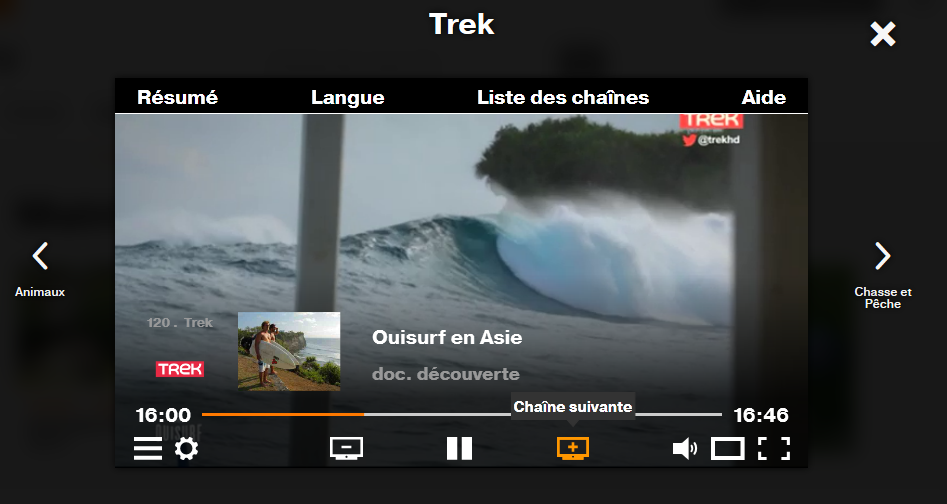

Masquer des éléments de manière accessible
Introduction
Parfois il est nécessaire de masquer des éléments dans une page web. La méthode classique est d’utiliser du CSS (display:none; et visibility:hidden;). Ces deux propriétés, comme l'attribut HTML5 `hidden`, permettent de masquer des éléments non seulement à l’écran, mais aussi pour les utilisateurs qui utilisent un lecteur d’écran. Ces éléments ne seront donc ni visibles, ni vocalisés par les synthèses vocales.
Dans certains cas, il peut être utile de masquer des éléments à l’écran, mais faire en sorte qu’ils soient quand même vocalisés par les lecteurs d’écran. Pour cela, on utilisera une classe CSS de « masquage accessible ».
Enfin, il reste un cas utile : afficher des éléments à l’écran, mais faire en sorte qu’ils ne soient pas vocalisés. Dans ce cas, on utilisera un attribut ARIA (aria-hidden).
Le masquage accessible
Masquer un élément de manière accessible permet de faire disparaître un élément à l’écran, tout en le conservant pour les utilisateurs de lecteurs d’écran. Techniquement, la solution consiste à appliquer une classe CSS sur l’élément qui ne doit pas être visible.
Il existe plusieurs solutions pour réaliser ce type de classe CSS :
- Donner une taille nulle à l’élément.
- Positionner l’élément en dehors de l’écran (
left: -1000px; top: -1000px;). - Utiliser les propriétés
text-indentouclip. - …
L’idéal étant de mixer les solutions pour garantir le bon fonctionnement sur l’ensemble des navigateurs.
Si vous utilisez un framework, il est fort probable que celui-ci embarque une telle classe. Par exemple si vous utilisez Boosted ou Bootstrap, vous pouvez utiliser la classe CSS sr-only (screen reader only) dont voici le code :
.sr-only {
position: absolute;
width: 1px;
height: 1px;
padding: 0;
margin: -1px;
overflow: hidden;
clip: rect(0, 0, 0, 0);
white-space: nowrap; /* added line */
border: 0;
}
Si vous n’avez aucune classe de masquage accessible, le plus simple est de copier-coller le code ci-dessus.
Mise en œuvre
La classe de masquage accessible peut s’employer dans beaucoup de cas. Par exemple, pour expliciter le libellé d’un lien :
<a href="…">En savoir plus<span class="sr-only"> sur nos offres mobiles</span></a>
En savoir plus sur nos offres mobiles
On aurait obtenu la même vocalisation si nous avions utilisé un attribut aria-label sur le lien comme ceci :
<a href="…" aria-label="En savoir plus sur nos offres mobiles">En savoir plus</a>
La solution utilisant la classe de masquage accessible offre néanmoins un avantage par rapport à la solution aria-label. Si les CSS sont désactivées (pour les remplacer par des CSS personnalisées adaptées à une certaine pathologie, par exemple), les textes en masquage accessible apparaîtront automatiquement à l’écran.
L’attribut aria-hidden
Cet attribut permet de masquer un élément (ou un groupe d’éléments) pour les lecteurs d’écran. Celui-ci n’a en revanche aucun effet sur l’affichage à l’écran.
Mise en œuvre
Pour masquer un élément aux lecteurs d’écran (ainsi que les éléments enfants), il suffit d’ajouter un attribut aria-hidden="true".
Attention
Si on met un élément focusable dans du contenu (même sur un noeud parent) possédant un `aria-hidden="true"`, il sera présent à la navigation clavier mais sera vide pour les AT. Donc, à ne pas faire.
Exemple :
La capture d’écran suivante montre un lecteur vidéo contenant un certain nombre de boutons (chaîne précédente, chaîne suivante, pause…). Ce lecteur est entouré par deux boutons permettant également d’accéder aux chaînes précédentes et suivantes.
Visuellement cela ne pose pas de problème. En revanche, lorsqu’on écoute la page avec un lecteur d’écran, on peut trouver curieux d’entendre un bouton vocalisé « Animaux » au début de la page, puis à la fin de la page un bouton vocalisé « Chasse et pêche ».

Pour éviter de perturber l’utilisateur inutilement, le plus simple est de masquer ces deux boutons (pour les lecteurs d’écran) à l’aide d’un attribut aria-hidden.
<div class="icon icon-arrow-left2" aria-hidden="true">
<div class="nextPreviousChannelName OrangeMedium" >Animaux</div>
</div>